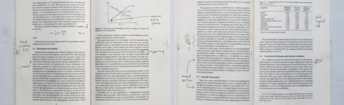
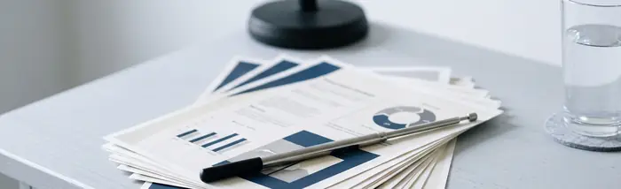
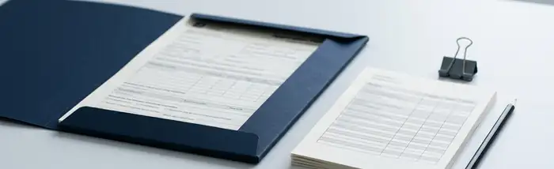
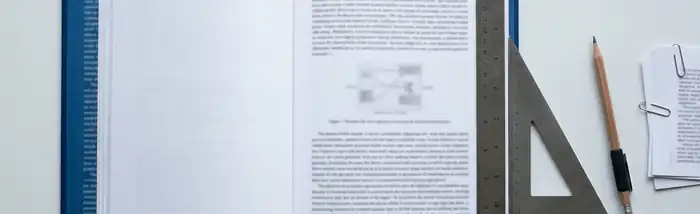

Консультируйте авторов научных работ по своей специальности
Куратор ProDisser отвечает за содержание: методология, разбор глав, подготовка к защите. Договор с клиентом, оплату, сроки этапов и публикацию материалов ведёт менеджер практики.
Нужен опыт в том виде работ, который вы готовы вести
Кандидатские и докторские диссертации
Методология и структура исследования, научная новизна, положения, выносимые на защиту, соответствие паспорту специальности.
Нужен опыт: учёная степень по профилю работы
ВКР и магистерские диссертации
Тема и план, разбор глав, требования кафедры, доклад и презентация к защите.
Нужен опыт: руководство ВКР или преподавание в вузе

Научные статьи
Структура и аргументация, выбор журнала по профилю, ответ рецензентам.
Нужен опыт: собственные публикации в журналах перечня ВАК, RSCI или Scopus

Подготовка к защите
Доклад и презентация, ответы на вопросы, отзывы и документы для диссертационного совета.
Нужен опыт: работа в диссертационном совете или официальное оппонирование

Гранты и НИОКР
Заявки и отчёты по грантам, научно-технические отчёты по НИОКР для компаний.
Нужен опыт: подготовка заявок и отчётов или экспертиза заявок фондов

Нормоконтроль и оформление
Оформление по ГОСТ Р 7.0.11-2011, ссылки и список источников по ГОСТ Р 7.0.5-2008 и ГОСТ Р 7.0.100-2018, требования вуза и совета.
Нужен опыт: нормоконтроль в вузе или диссертационном совете
Автором работы всегда остаётся клиент. Куратор консультирует, разбирает и комментирует его текст, помогает с методологией и оформлением, готовит к защите. Писать работу за клиента куратор не берётся.
Как устроена работа
Кто за что отвечает
Клиент работает с менеджером практики: заявка, договор, оплата, сроки. Куратор отвечает за содержание и получает задания, материалы и замечания через кабинет. Клиент видит куратора как «Куратор» со степенью и специальностью, без имени.
Обязанности менеджера практики и куратора
Менеджер практики
Куратор — вы
Клиент и договор
разбирает заявку, ведёт договор и оплату клиента
видит имя клиента и тему работы; контакты клиента видит только практика
План и сроки
заводит этапы, суть и срок каждого этапа
работает по заданию этапа; вопросы по плану — менеджеру письмом
Содержание
следит за сроками и ходом этапов
консультирует, разбирает текст клиента, помогает с методологией и оформлением
Версии материалов
публикует версии куратора клиенту
прикладывает свои версии с пояснением; прежние версии сохраняются
Сдача этапа
по записке куратора пишет клиенту итог этапа или возвращает этап с причиной
сдаёт этап с запиской: что сделано и на что обратить внимание клиента
Замечания клиента
проверяет замечания, в которых клиент оставил контакты
получает замечания к своей версии и отмечает, что принял их в работу
Вознаграждение
руководитель практики отмечает начисления и выплаты
суммы и состояние — на экране «Вознаграждение», о начислении приходит письмо
Один этап
Как проходит этап работы
Каждый этап проходит одну и ту же цепочку. На карточке работы всегда видно, чей сейчас ход: «Ход за вами», «Ход за менеджером» или «Ход за клиентом».
Письма о новых делах приходят на почту, можно одной сводкой в 9:00 по Москве; Telegram подключается в настройках кабинета.